真实性说明
- 目标、项目、任务、日程、收集箱、知识库、专注、复盘、通知和成长记录均可创建、编辑或删除。
- 数据使用浏览器 localStorage 持久化，刷新后保留。
- 任务状态、日程、专注成果和执行历史之间使用同一份共享数据。
- 完成任务时必须留下文字成果，或者在专注结束时填写实际完成内容。
本页直接提供当前版本的真实页面截图、页面职责、主要操作控件与数据联动说明。 所有文字和图片均存在于静态 HTML 中，不依赖前端 JavaScript，适合外部分析工具直接读取。
集中显示未完成任务、当天时间轴、当天进度和本周整体推进情况。
#/dashboard


为任务安排具体时间块，支持日、周、月视图，计划时间和实际执行时间分开保存。
#/schedule
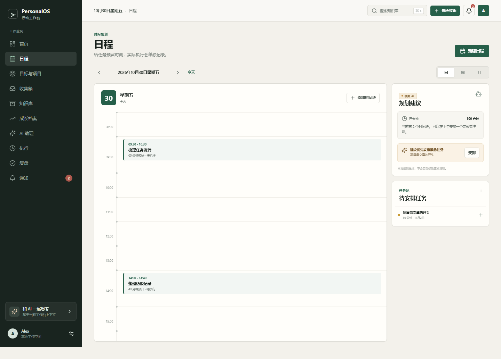
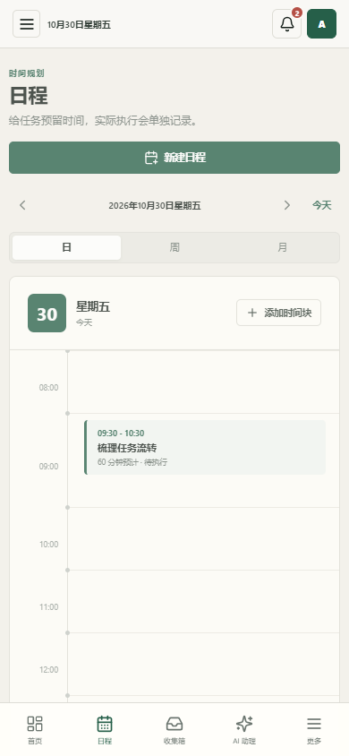
按“目标 → 项目 → 任务”组织行动，同时允许独立任务存在。
#/goals
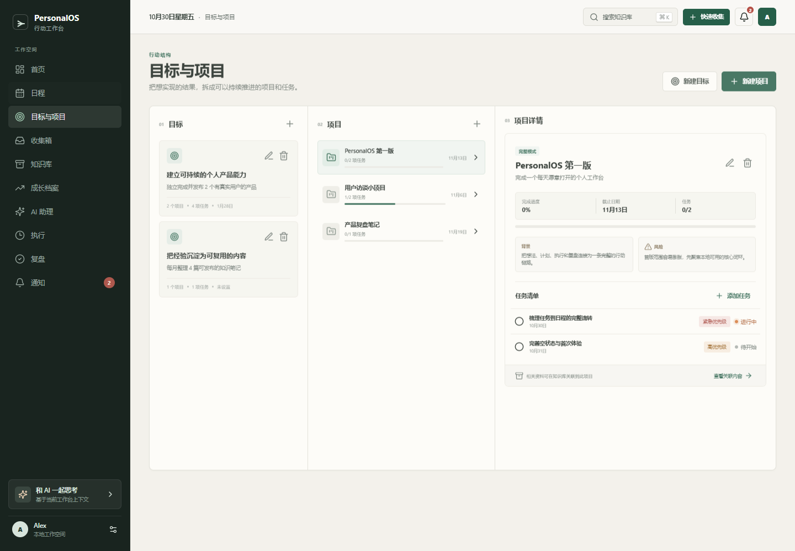
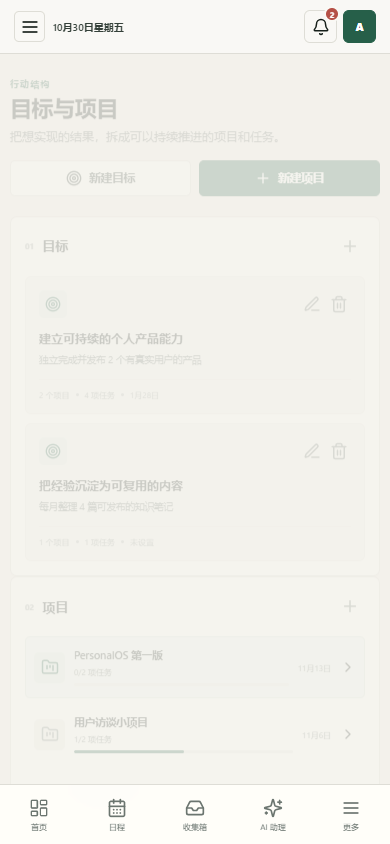
先保存未经整理的想法、临时事项和资料，再决定归档或转换。
#/inbox
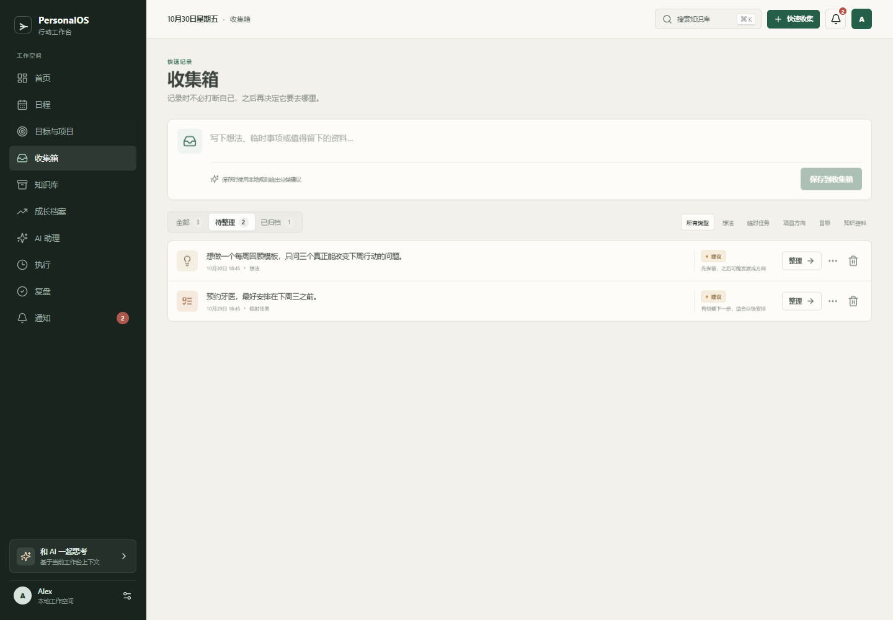
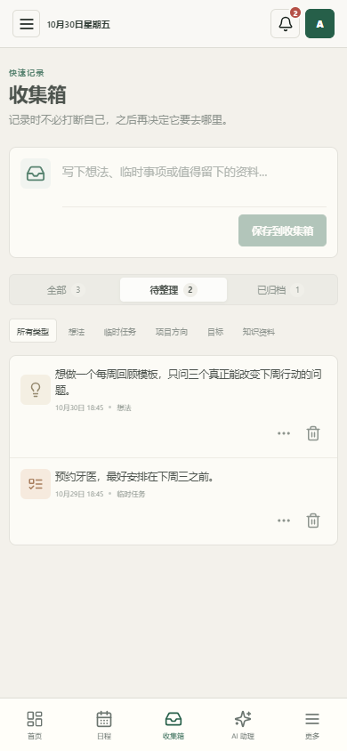
保存文章、笔记、书籍、视频和链接，通过分类、标签、搜索和关联项目再次使用。
#/knowledge
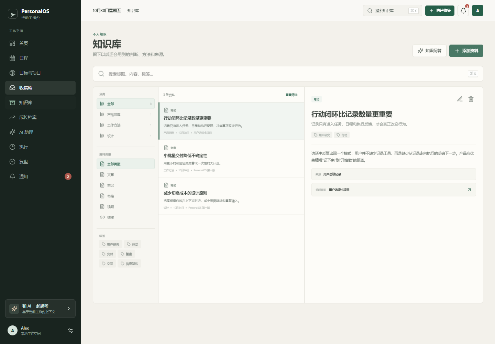
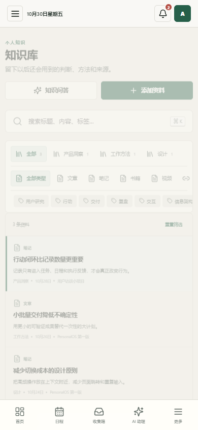
记录能力变化、实践经历和重要里程碑，并从长期记录中观察重复出现的能力。
#/growth
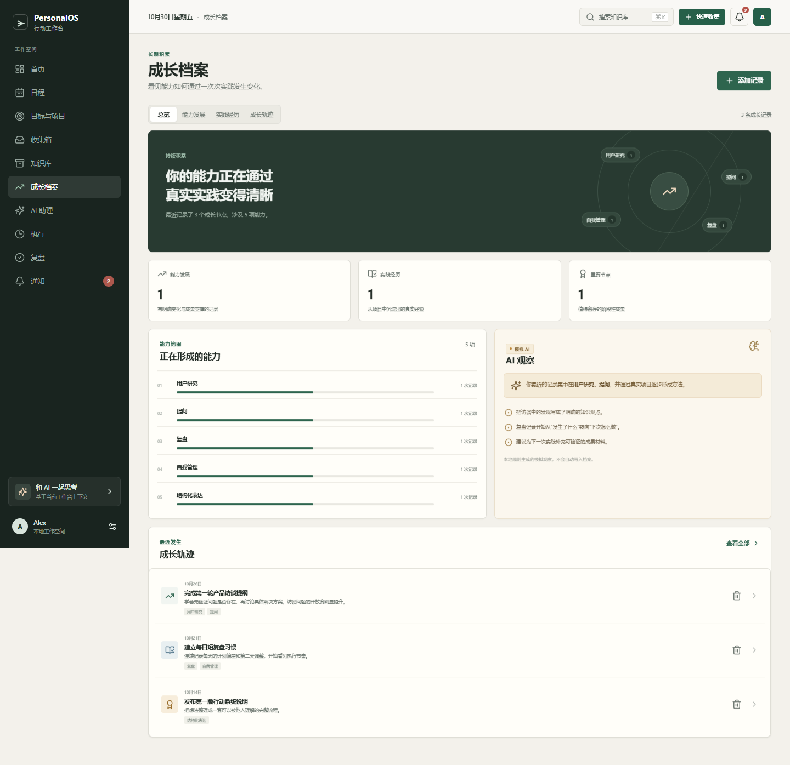
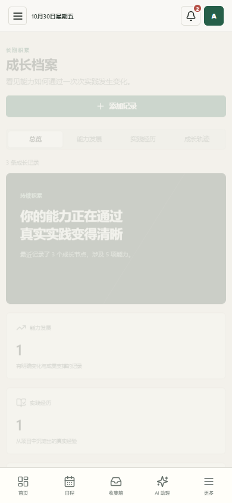
读取当前工作台数据，围绕规划、项目、收集箱和复盘进行模拟对话。
#/assistant

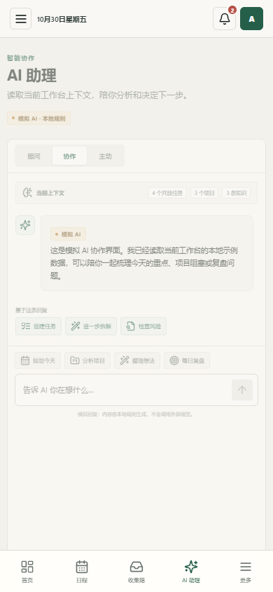
从开放任务开始正计时专注，支持暂停、离开冷静期、结束反馈和成果记录。
#/focus

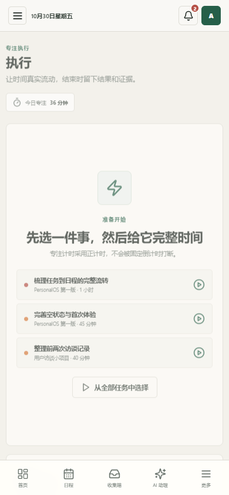
从任务、日程、专注和成果材料中自动汇总一段时间的真实行动数据。
#/review

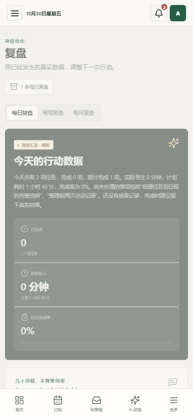
把任务提醒、项目跟进和 AI 建议分开显示，避免无关信息持续堆积。
#/notifications
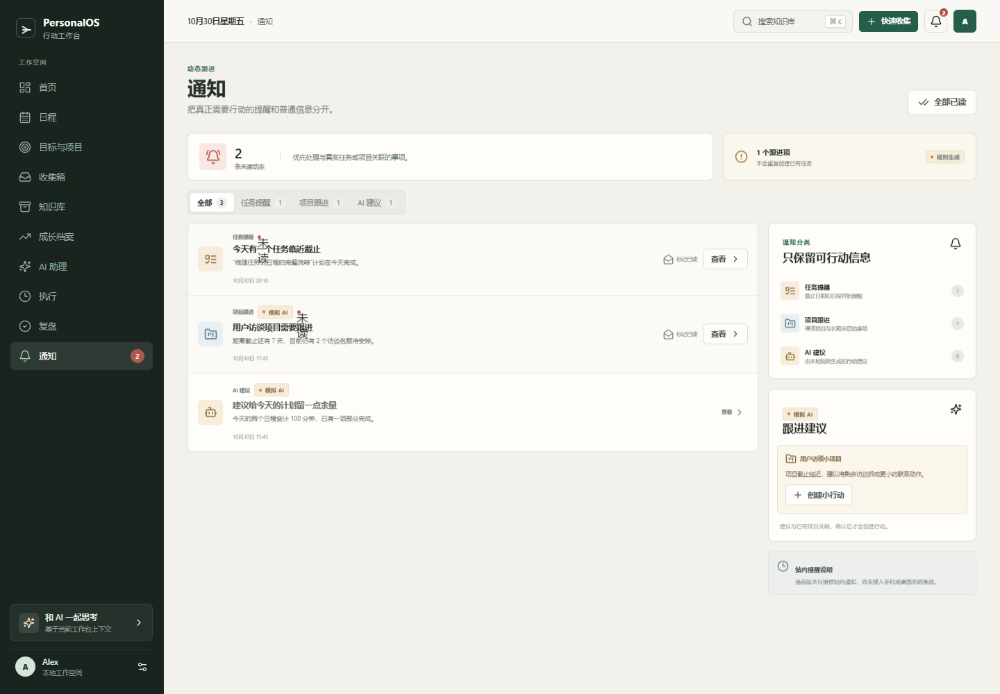
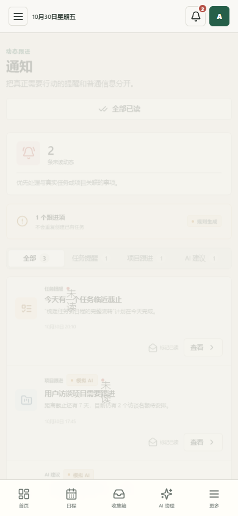
补充展示表单、确认流程和对话结果，便于检查控件层级、弹层与反馈方式。
UI STATES
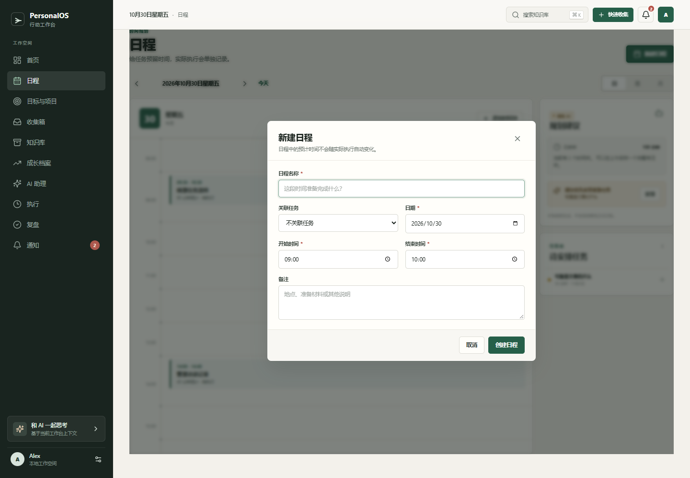
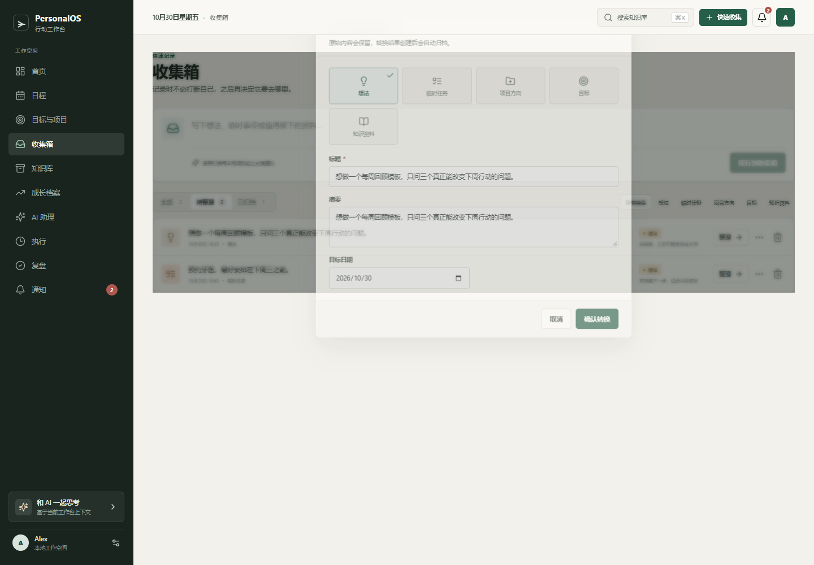
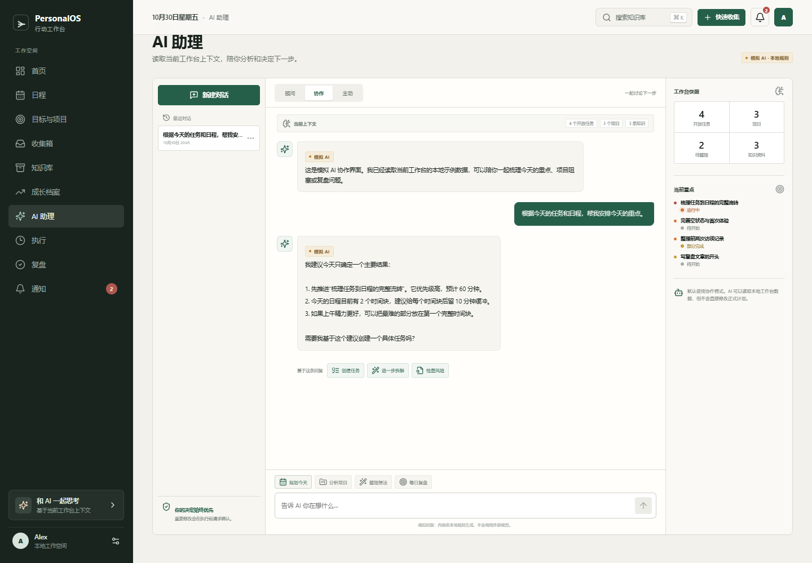
想法收集 → 目标/项目 → 任务 → 日程 → 专注执行 → 成果记录 → 复盘 → 知识沉淀与成长档案。 所有页面共享同一套浏览器本地数据；重要修改和删除均需要用户操作或确认。